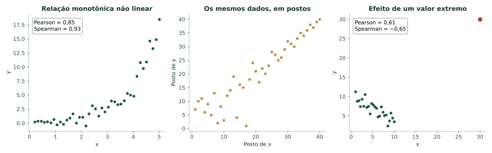
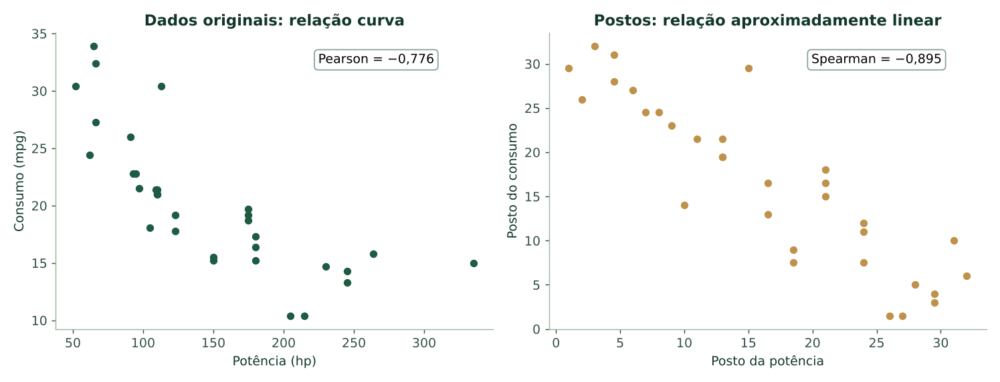

Correlação de Spearman
Mede a associação monotônica entre duas variáveis, usando os postos no lugar dos valores.
Comece por aqui
Nem toda associação é uma reta. Muitas vezes uma variável aumenta sempre que a outra aumenta, mas em ritmo que muda ao longo do caminho. A correlação de Spearman foi feita para esse caso: ela troca os valores pelos seus postos (1º, 2º, 3º, ...) e mede se as duas ordenações caminham juntas.
Charles Spearman era psicólogo e publicou o coeficiente em 1904, no mesmo ano em que propôs a ideia de um fator geral de inteligência. O método nasceu para lidar com classificações e notas, dados tipicamente ordinais.
O que é o coeficiente
O coeficiente de Spearman (\(r_s\), também escrito \(\rho\)) é o coeficiente de Pearson aplicado aos postos das observações. Ele mede a força de uma relação monotônica: aquela em que, quando x aumenta, y nunca muda de sentido (sempre tende a aumentar, ou sempre tende a diminuir), seja em linha reta ou em curva.

Pressupostos e como verificá-los
| Pressuposto | Por que importa | Como verificar |
|---|---|---|
| Variáveis ao menos ordinais | É preciso poder ordenar as observações. | Tipo de variável (quantitativa ou ordinal). |
| Pares independentes | Condição do teste de hipóteses. | Delineamento do estudo. |
| Relação monotônica | O coeficiente não capta relações em U ou em sino. | Gráfico de dispersão. |
| Empates | Com empates usa-se o posto médio e o valor-p passa a ser aproximado. | anyDuplicated(x); no R, exact = FALSE. |
| Normalidade | Não é exigida. | — |
Hipóteses e estatística de teste
Em que:
- \(r_s\)
- coeficiente de correlação de Spearman amostral
- \(\rho_s\)
- coeficiente populacional
- \(R_i,\ Q_i\)
- postos de \(x_i\) e de \(y_i\) (posto médio em caso de empate)
- \(d_i\)
- diferença entre os postos: \(R_i-Q_i\)
- \(n\)
- número de pares
- \(t\)
- estatística de teste aproximada, usada quando há empates ou n não é pequeno
Exemplo numérico, passo a passo (n = 6, sem empates)
| i | x | y | Posto de x | Posto de y | d | d² |
|---|---|---|---|---|---|---|
| 1 | 10 | 1,2 | 1 | 2 | −1 | 1 |
| 2 | 20 | 0,9 | 2 | 1 | 1 | 1 |
| 3 | 30 | 1,5 | 3 | 3 | 0 | 0 |
| 4 | 40 | 2,8 | 4 | 5 | −1 | 1 |
| 5 | 50 | 2,1 | 5 | 4 | 1 | 1 |
| 6 | 60 | 9,5 | 6 | 6 | 0 | 0 |
| Soma | 4 |
\(r_s=1-\dfrac{6\times4}{6\,(36-1)}=1-\dfrac{24}{210}=0{,}886\).
O último valor de y (9,5) é muito maior que os demais. Para Spearman ele é apenas “o maior”, com posto 6. O Pearson dos mesmos dados é 0,762, puxado para baixo por esse ponto fora da reta.
Propriedades, valor-p e intervalo de confiança
- \(-1\leq r_s\leq1\); vale \(\pm1\) quando a relação é perfeitamente monotônica, mesmo que não seja linear.
- Não muda com transformações monotônicas crescentes (logaritmo, raiz quadrada) de x ou de y.
- É resistente a valores extremos, pois eles contam apenas pela posição.
- Para n pequeno e sem empates, o valor-p é exato (distribuição de permutação); com empates ou n maior, usa-se a aproximação t acima.
- Não há fórmula simples e confiável para o IC; a opção mais usada é o bootstrap. A transformação de Fisher com erro-padrão \(1{,}03/\sqrt{n-3}\) é uma aproximação comum.
- Com muitos empates, a fórmula simplificada com \(d_i^2\) deixa de ser exata; use o Pearson dos postos.
Como interpretar os resultados
| Resultado | Leitura |
|---|---|
| r_s próximo de 1 | Quando x aumenta, y quase sempre aumenta. |
| r_s próximo de −1 | Quando x aumenta, y quase sempre diminui. |
| r_s próximo de 0 | Sem tendência monotônica (pode haver relação em U). |
| |r_s| bem maior que |r| de Pearson | Sinal de relação monotônica não linear ou de valores extremos. |
| p < 0,05 | Evidência de associação monotônica na população. |
| Valor | Descrição convencional | Observação |
|---|---|---|
| 0,10 | Associação pequena | Pode ser relevante em fenômenos com muitas causas. |
| 0,30 | Associação moderada | |
| 0,50 ou mais | Associação grande | Em calibração de instrumentos, exige-se muito mais (acima de 0,99). |
Esses pontos de referência (COHEN, 1988) são convenções das ciências do comportamento. A interpretação depende sempre da área e do objetivo.
Reporte r_s, n, o valor-p e, quando possível, um intervalo de confiança por bootstrap.
Como executar no R e em Python
Onde executar o código em Python
Não é preciso instalar nada: o Google Colab é um computador na nuvem, gratuito, que executa Python pelo navegador e já traz as bibliotecas usadas aqui (numpy, scipy e matplotlib).
cor() e cor.test() com method = "spearman" pertencem ao pacote stats, já instalado com o R. Havendo empates, use exact = FALSE para evitar o aviso de que o valor-p exato não pode ser calculado.
cor(mtcars$hp, mtcars$mpg, method = "spearman")
cor.test(mtcars$hp, mtcars$mpg, method = "spearman", exact = FALSE)
Exemplo de aplicação
Contexto dos dados
No conjunto mtcars, hp é a potência do motor e mpg é o consumo em milhas por galão. Motores mais potentes tendem a ser menos econômicos, mas a relação não é uma reta: a queda do consumo é rápida nas potências baixas e desacelera depois.
Código em R
# Correlação de Spearman: exemplo completo ----
# Pacote: apenas o stats (já vem com o R). Dados: mtcars.
# 1. Dados: potência (hp) e consumo (mpg) de 32 automóveis
x <- mtcars$hp
y <- mtcars$mpg
n <- length(x)
# 2. Dispersão dos dados e dos postos
par(mfrow = c(1, 2))
plot(x, y, pch = 19, xlab = "Potência (hp)", ylab = "Consumo (mpg)")
plot(rank(x), rank(y), pch = 19, col = "darkgreen",
xlab = "Posto da potência", ylab = "Posto do consumo")
par(mfrow = c(1, 1))
# 3. Correlação de Spearman (exact = FALSE porque há empates)
cor.test(x, y, method = "spearman", exact = FALSE)
# 4. Spearman é o Pearson calculado sobre os postos
cor(rank(x), rank(y))
sum((rank(x) - rank(y))^2) # soma de d²
# 5. Comparação com Pearson
cor(x, y)
# 6. Intervalo de confiança de 95% por bootstrap (percentil)
set.seed(2026)
boot <- replicate(5000, { i <- sample(n, replace = TRUE)
cor(x[i], y[i], method = "spearman") })
quantile(boot, c(0.025, 0.975))
A mesma análise em Python, com os resultados
Cole o código em um notebook do Google Colab ↗ e execute com Shift+Enter. Os valores abaixo são a saída desse código.
# Bibliotecas: numpy, scipy e matplotlib (já instaladas no Google Colab)
import numpy as np
from scipy import stats
import matplotlib.pyplot as plt
# Dados do conjunto mtcars: potência (hp) e consumo (mpg)
hp = np.array([110, 110, 93, 110, 175, 105, 245, 62, 95, 123, 123, 180, 180, 180, 205, 215, 230, 66, 52, 65, 97, 150, 150, 245, 175, 66, 91, 113, 264, 175, 335, 109])
mpg = np.array([21, 21, 22.8, 21.4, 18.7, 18.1, 14.3, 24.4, 22.8, 19.2, 17.8, 16.4, 17.3, 15.2, 10.4, 10.4, 14.7, 32.4, 30.4, 33.9, 21.5, 15.5, 15.2, 13.3, 19.2, 27.3, 26, 30.4, 15.8, 19.7, 15, 21.4])
n = len(hp)
# 1. Dispersão dos dados e dos postos
fig, ax = plt.subplots(1, 2, figsize=(10, 4))
ax[0].scatter(hp, mpg); ax[0].set_xlabel("Potência (hp)"); ax[0].set_ylabel("Consumo (mpg)")
ax[1].scatter(stats.rankdata(hp), stats.rankdata(mpg), color="darkgreen")
ax[1].set_xlabel("Posto da potência"); ax[1].set_ylabel("Posto do consumo")
plt.show()
# 2. Correlação de Spearman
rho, p = stats.spearmanr(hp, mpg)
t = rho * np.sqrt((n - 2) / (1 - rho**2))
print(f"rho = {rho:.5f} | t = {t:.4f}, gl = {n - 2}, p-valor = {p:.3e}")
# 3. Spearman é o Pearson calculado sobre os postos (postos médios nos empates)
rx, ry = stats.rankdata(hp), stats.rankdata(mpg)
print(f"Pearson dos postos = {stats.pearsonr(rx, ry).statistic:.5f}")
d2 = np.sum((rx - ry)**2)
print(f"Soma de d² = {d2:.1f} | fórmula simplificada 1 - 6Σd²/(n(n²-1)) = {1 - 6*d2/(n*(n**2 - 1)):.5f} (aproximada, pois há empates)")
print("Valores repetidos: hp =", n - len(np.unique(hp)), "| mpg =", n - len(np.unique(mpg)))
# 4. Comparação com Pearson
r = stats.pearsonr(hp, mpg).statistic
print(f"Pearson (dados originais) = {r:.5f}")
# 5. Intervalo de confiança de 95% por bootstrap (percentil)
rng = np.random.default_rng(2026)
boot = []
for _ in range(5000):
i = rng.integers(0, n, n)
boot.append(stats.spearmanr(hp[i], mpg[i])[0])
print("IC 95% bootstrap:", np.round(np.percentile(boot, [2.5, 97.5]), 4))
# 6. Exemplo do texto (n = 6, sem empates)
x = np.array([10, 20, 30, 40, 50, 60.]); y = np.array([1.2, 0.9, 1.5, 2.8, 2.1, 9.5])
r6, p6 = stats.spearmanr(x, y)
print(f"\nn = 6: postos de y = {stats.rankdata(y).astype(int).tolist()}, Σd² = {np.sum((stats.rankdata(x)-stats.rankdata(y))**2):.0f}, rho = {r6:.4f}, Pearson = {stats.pearsonr(x, y).statistic:.4f}")
Resultados da execução
rho = -0.89466 | t = -10.9690, gl = 30, p-valor = 5.086e-12 Pearson dos postos = -0.89466 Soma de d² = 10315.5 | fórmula simplificada 1 - 6Σd²/(n(n²-1)) = -0.89067 (aproximada, pois há empates) Valores repetidos: hp = 10 | mpg = 7 Pearson (dados originais) = -0.77617 IC 95% bootstrap: [-0.9546 -0.7852] n = 6: postos de y = [2, 1, 3, 5, 4, 6], Σd² = 4, rho = 0.8857, Pearson = 0.7618

| Elemento | Valor | Leitura |
|---|---|---|
| r_s | −0,895 | Associação monotônica negativa e forte. |
| t aproximado (30 g.l.) | −10,97 | Valor-p = 5,1 × 10⁻¹². |
| IC 95% (bootstrap percentil) | [−0,955; −0,785] | Obtido com 5000 reamostras; varia levemente conforme a semente. |
| Pearson, mesmos dados | −0,776 | Menor em valor absoluto: a relação não é linear. |
| Valores repetidos | 10 em hp; 7 em mpg | Há empates: valor-p aproximado. |
Leitura: a ordenação dos carros por potência é quase o inverso da ordenação por economia de combustível. A diferença entre −0,895 (Spearman) e −0,776 (Pearson) quantifica o que o gráfico mostra: a associação é forte, mas curva. A fórmula simplificada com \(d^2\) daria −0,891, valor apenas aproximado, por causa dos empates.
Erros comuns
| Erro | Como evitar |
|---|---|
| Usar Spearman como “Pearson para dados não normais” sem olhar o gráfico | As duas medidas respondem a perguntas diferentes: linearidade ou monotonicidade. |
| Aplicar a relações em U | O coeficiente fica próximo de zero mesmo com dependência forte. |
| Usar a fórmula com d² havendo muitos empates | Calcule o Pearson dos postos (é o que o R faz). |
| Interpretar r_s² como variância explicada dos dados originais | Refere-se aos postos, não aos valores. |
| Inferir causalidade | Vale a mesma cautela do Pearson. |
Alternativas e fluxo de trabalho
| Procedimento | Quando preferir |
|---|---|
| Pearson | Relação linear, sem valores extremos; interesse na reta. |
| Tau de Kendall | Amostras pequenas, muitos empates ou interpretação probabilística. |
| Transformação seguida de Pearson | Quando o logaritmo ou outra transformação lineariza a relação e interessa um modelo. |
| Informação mútua ou correlação de distância | Relações não monotônicas. |
- Faça o diagrama de dispersão.
- Verifique se a relação é monotônica.
- Calcule r_s (e compare com Pearson).
- Obtenha um intervalo de confiança por bootstrap.
Referências desta ficha
- SPEARMAN, Charles. The proof and measurement of association between two things. The American Journal of Psychology, v. 15, n. 1, p. 72-101, 1904.
- HOLLANDER, Myles; WOLFE, Douglas A.; CHICKEN, Eric. Nonparametric statistical methods. 3. ed. Hoboken: Wiley, 2014.
- BONETT, Douglas G.; WRIGHT, Thomas A. Sample size requirements for estimating Pearson, Kendall and Spearman correlations. Psychometrika, v. 65, n. 1, p. 23-28, 2000.
- EFRON, Bradley; TIBSHIRANI, Robert J. An introduction to the bootstrap. New York: Chapman & Hall, 1993.
- COHEN, Jacob. Statistical power analysis for the behavioral sciences. 2. ed. Hillsdale: Lawrence Erlbaum, 1988.
- HENDERSON, Harold V.; VELLEMAN, Paul F. Building multiple regression models interactively. Biometrics, v. 37, n. 2, p. 391-411, 1981. (Conjunto de dados
mtcars, pacotedatasetsdo R.) - R CORE TEAM. R: a language and environment for statistical computing. Vienna: R Foundation for Statistical Computing, 2026. Disponível em: https://www.r-project.org/. (Funções
corecor.test, pacotestats.) - POSIT TEAM. RStudio: integrated development environment for R. Boston: Posit Software, PBC. Disponível em: https://posit.co/download/rstudio-desktop/.
- VIRTANEN, Pauli et al. SciPy 1.0: fundamental algorithms for scientific computing in Python. Nature Methods, v. 17, p. 261-272, 2020. DOI: 10.1038/s41592-019-0686-2. (Funções do módulo
scipy.stats.) - HARRIS, Charles R. et al. Array programming with NumPy. Nature, v. 585, p. 357-362, 2020. DOI: 10.1038/s41586-020-2649-2.
- HUNTER, John D. Matplotlib: a 2D graphics environment. Computing in Science & Engineering, v. 9, n. 3, p. 90-95, 2007.
- GOOGLE. Google Colaboratory. Disponível em: https://colab.research.google.com/.
- As figuras desta ficha foram elaboradas pelo autor.

Prof. Dr. Cássius Henrique Xavier Oliveira
Professor · ICTIN/UFLA · Estatística, Confiabilidade e Ciência de Dados.
Conheça minha trajetória e projetos →